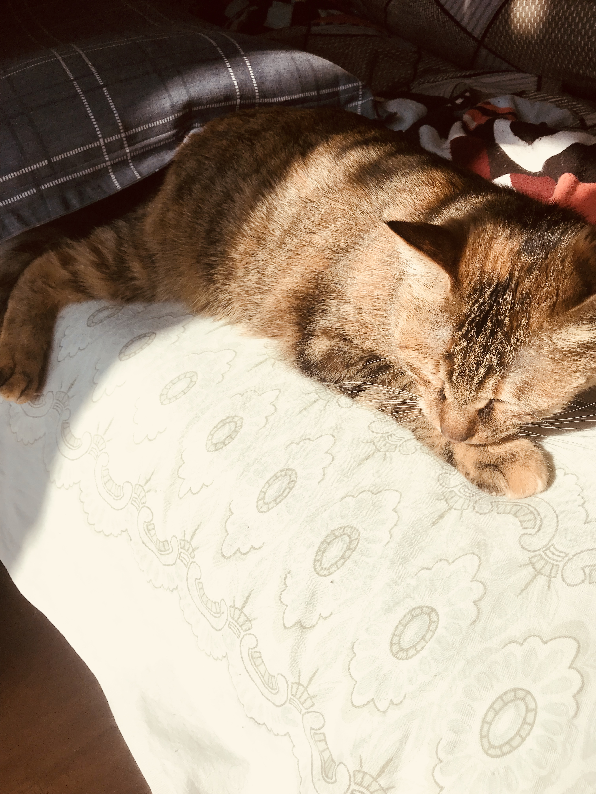
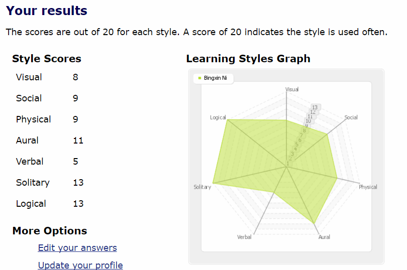

My name is Bingxin Ni, or you can call me Krista. My student ID is s3632682 and my student email address is s3632682@student.rmit.edu.au. I I was born in Nanjing, Jiangsu Province, China, not far from Shanghai. I speak Mandarin. I love playing vedio games, especially adventure and puzzle games. I have a two-year-old female cat. But I did not name her because I think it is a bit silly to named a animal.I would rather use meow to call her. Now my mother is raising her. I do not exercise very much now, but I used to play badminton.
I have always felt that I am suitable for science. More specifically, I have always been good at and like those subjects that focus on understanding, but I am not good at subjects that need to be remembered. I alos like those creative and artistic things, but I do not have any musicals or painting skills. I think IT should be the art in science. Information technology is innovation, technology means development, it can satisfy your imagination and turn imaginary things into reality. And as I said before, I like to play games. I started playing games when I was three years old (of course, this was told by my relatives, I did not remember at the time). I hope to learn the technology to make my own game, my own world.
I hope to work in a game company, my ideal position is to write a game script, or as a game modeler. You can see a story that develops along your mind, or sees an imaginary character become a reality, and can do various actions based on your imagination. This feeling is very beautiful.When artificial intelligence develops, maybe you can create an ideal partner, which is so cool. I hope that I can find a job in my hometown, or a city that is not too far away. My ideal salary is about 8,000 to 12,000 RMB, I hope to have normal holidays and weekends, in addition to three days of annual rest. Working hours does not matter, because I know that the game company's working hours are difficult to fix. Of course, this work requires a skilled use of various modeling software sucn as 3DMax or Maya and a certain degree of art. I cannot model myself now, I can only slightly change other people's models. And most of the better game companies need employment experience.idea job
My MBTI test result:result
My learning styles test result:
My big five personality test result:result
These test results mean that I am a person with imagination and creativity. I am an idealist. I don't follow the rules. I am an introverted and calm person. I like to listen instead of saying that my teammates will like me very much, but I don’t like teamwork myself.
I have always hoped to make a Chinese martial arts stand-alone game. The freedom of this game is very high, and players can explore a lot of things on their own. The idea of this idea is that I used to write a novel when I was in middle school, but I think there are too many key people in it. It is difficult to describe it alone through the novel, and my literary level is not so high, so I intend to show it through the game. The protagonists in my imagination should be born in a mysterious organization, and they pick up various tasks from the organization. They can use a variety of weapons and dress up as various types of people, no one knows their true identity. Maybe this game can be paired with vr somatosensory equipment, let you use your weapon more freely.Now martial arts games are still very popular in China, just like magic is very popular abroad, so if this game can be made, the evaluation will be good. However, the market for Chinese stand-alone games is not very good.
Of course, there are so many things you need to do a big game. First you need at least one person to build the script and worldview, including each npc conversation. You also need people to design combat systems, maps, character models, interfaces, and more. A publicity team is also essential. Maybe you need to use the Unreal Engine, you need to use 3dmax, you need to use programming software, you even need motion capture technology, you need to use ps, you need to use ae, you need to use html. These technologies and software are numerous.
There are a lot of problems with making a game. First, you may not have the money to develop the game, or you can't find the ideal team. Then on your development, you will encounter various bugs, and there may be a lot of places to rework. Maybe the game production schedule is longer than you expected, so you have to postpone the sale, which will make your players lower your evaluation. When you can sell, players will be dissatisfied with your pricing or pre-sale rewards, or you will think that your game and promotion are not in line with their expectations. These are just some of the problems I can think of for a while, and there will be many other weird problems that will happen.
The benefits of successful game production are also great. First, it will bring you a lot of money, so that you can get better resources such as better employees and better office. It will also make you and your studio famous, allowing you to gain a bigger advantage in the next release of your work and attract more new customers. Being a rich man and a celebrity is very exciting.